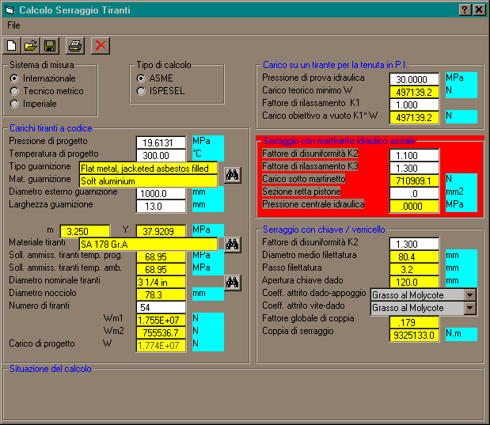

La procedura di calcolo del carico e della coppia di serraggio bulloni può essere lanciata anche indipendentemente dal programma AsmeVip. E' sufficiente accedere al menu 'Calcoli meccanici/Serraggio bulloni' della finestra di Lancio. In tal caso apparirà la finestra sotto riprodotta, tramite la quale è possibile gestire il salvataggio su disco dei soli dati relativi al problema di serraggio (file con estensione .TIR)
Per ogni informazione non contenuta nel presente capitolo fare riferimento a Finestra 'Serraggio bulloni'
Nella versone attuale è opportuno scegliere sempre l'opzione ASME.
